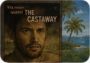

Draft-first Markdown workbench
Plan the film, the source trail and the public discussion as separate working notes.
Use the builders to create clean `.md` files for documentary viewing, research, scenes, interviews, screenings, follow-up pages and future agent handoffs.

Link pathways
Three lanes, one handoff path.
The tool is split so a film note does not become a research dump, and a public follow-up page does not accidentally carry private working notes.
Film profile, research angle, source trail and interview questions before the viewing pass.
Lane 02 Viewing and analysisViewing notes after a rough cut or completed film, then scene, subject and theme analysis.
Lane 03 Public discussionDiscussion run sheet, event notes, follow-up action and agent handoff packets.
Drafts: every generated file starts as a draft for human review.
Sources: date, provenance and uncertainty are visible where useful.
Privacy: public notes and private working notes stay clearly separated.